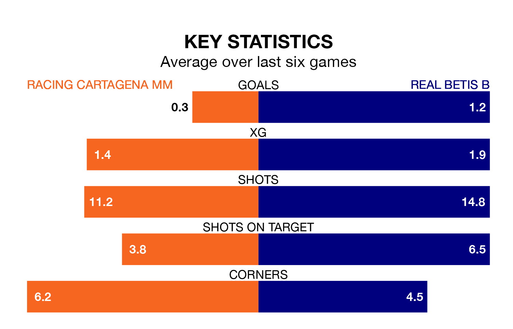

Real Betis B face a challenge to maintain their high-scoring form away against a tight Racing Cartagena MM defence on Sunday.
With 26 goals in 19 games, Betis B are the second-highest scorers in Segunda División RFEF Group 4 ahead of the 11am kick-off at the Estadio El Pitín.
They face a Racing Cartagena MM side who have scored 12 in 19 matches, but conceded only 15 goals, putting them joint-fourth among the league's tightest defences – only Sevilla II, Águilas FC and Marbella FC have conceded fewer goals.
Racing Cartagena MM are in disappointing form in Segunda División RFEF Group 4, with one win and two draws from their last six games.
With two wins and four draws over that period, Betis B's form is better – they have taken 10 points from 18, compared to the hosts' five.
The away side are sixth in the table after 19 games, of which they have won seven and drawn eight, earning 29 points.
Racing Cartagena MM are four places behind Betis B in 10th, with six wins and six draws putting them on 24 points.
Racing Cartagena MM's last match was on January 21, a 0-0 draw against La Unión Atlético.
Betis B beat Linense 1-0 last time out, also on January 21.
Updated: 09:18 (UTC), 23/01/24